Jiabao.Xu@glasgow.ac.uk
massimo.vassalli@glasgow.ac.uk
What is Artificial Intelligence?
Artificial Intelligence (AI), the ability of a digital computer or computer-controlled robot to perform tasks commonly associated with intelligent beings. The term is frequently applied to the project of developing systems endowed with the intellectual processes characteristic of humans, such as the ability to reason, discover meaning, generalize, or learn from past experience.
Encyclopaedia Britannica www.britannica.com
In 1936 Alan Turing published “On Computable Numbers, with an Application to the Entscheidungsproblem” presenting the principle of a universal machine, later called the Turing machine.
From automation to calculation.
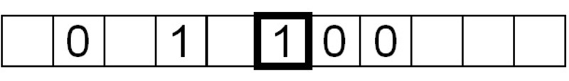
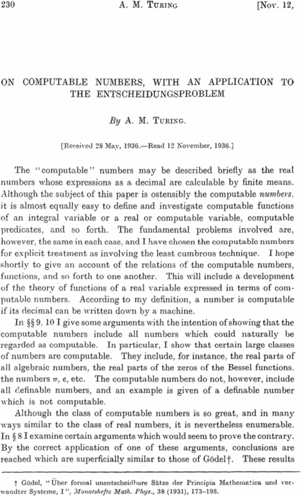
The Turing-Welchman Bombe machine was an electro-mechanical device used to break Enigma-enciphered messages about enemy military operations during the Second World War. The first Bombe (Victory) started code-breaking on Bletchley Park on 14 March 1940 and by the end of the war almost 1676 female WRNS and 263 male RAF personnel were involved in the deployment of 211 Bombe machines.
Handbook of Robotics, 56th Edition, 2058 A.D.
Isaac Asimov, “Runaround“ (1942), included in “I, Robot” (1950)
I propose to consider the question, ‘Can machines think?’
This should begin with definitions of the meaning of the terms ‘machine’ and ‘think’.
The question is not whether the machine can think, but whether it can be made to appear to think.
Alan Turing, Mind (1950)
It is played with three people, a man (A), a woman (B), and an interrogator (C) who may be of either sex. The interrogator stays in a room apart from the other two. The object of the game for the interrogator is to determine which of the other two is the man and which is the woman.
We now ask the question, ‘What will happen when a machine takes the part of A in this game?’
Alan Turing, Mind (1950)
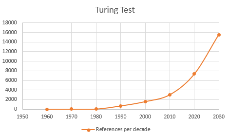
It will simplify matters for the reader if I explain first my own beliefs in the matter. Consider first the more accurate form of the question. I believe that in about 50 years’ time it will be possible, to program computers, with a storage capacity of about \(10^9\), to make them play the imitation game so well that an average interrogator will not have more than 70% chance of making the right identification after 5 min of questioning.
Alan Turing, Mind (1950)
Passing the test is only a matter of memory?
ELIZA (Weizenbaum, 1966): the computational therapist is considered the history first chatbot. It uses natural language processing and elaborates answers based on a limited set of rules (Rogerian analyst)
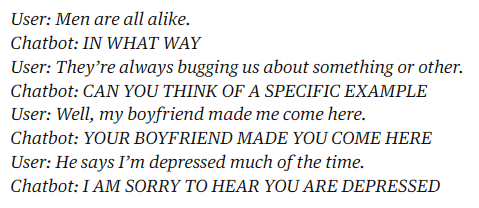
PARRY (Colby, 1972): Judges rated degrees of paranoia present in initial psychiatric interviews of both paranoid patients and of versions of the paranoid model. The statistical results indicate a satisfactory degree of resemblance between the two groups of interviews (52% correct answer).
The Loebner prize, named upon Hugh Loebner (1942-2016), ran between 1991 and 2019 and it attracted numerous competitors to address a Turing Test in exchange for gold / silver / bronze awards depending on the level of “disguise”. No one ever managed to get more than the bronze. The prize was criticised as a marketing initiative with no real benefit for the field. This is a common topic in AI. Mitsuku (the name of the AI) was awarded the bronze medal 5 times, including the last 4 editions, 2016-2019
Kuki is the world’s most popular English language social chatbot, having exchanged over one billion messages with an estimated 25 million human end-users on the web, streaming and social media, and various messaging applications.
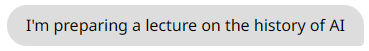
Language Model for Dialogue Applications - Google (2020)
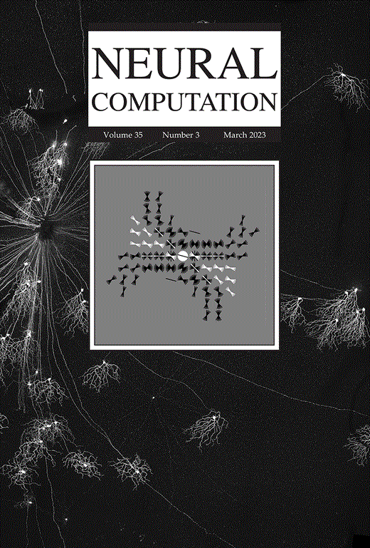
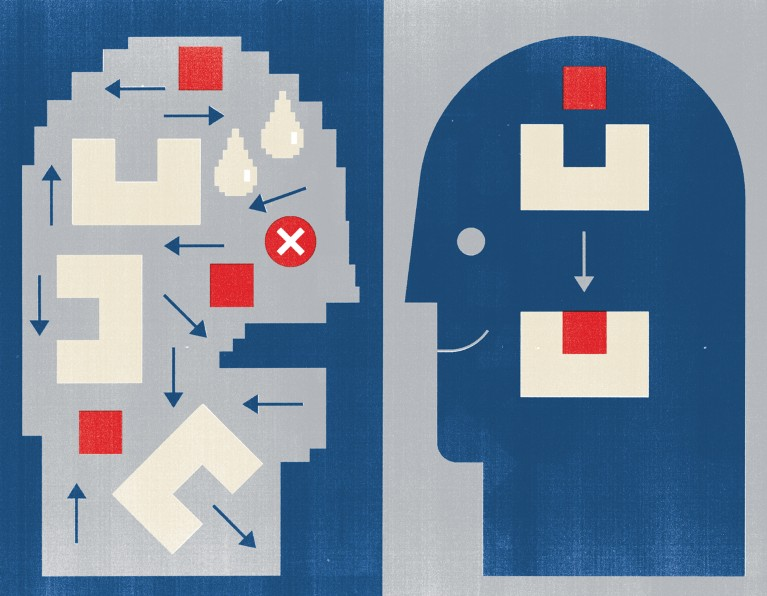
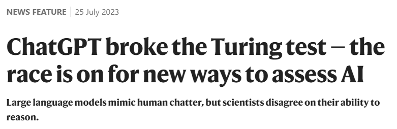
A Proposal for the Dartmouth Summer Research Project on Artificial Intelligence (1955)
John McCarthy: American computer scientist who coined the term “Artificial Intelligence”, organized the Dartmouth Summer Research Project, and created the LISP programming language, one of the most influential languages in the history of AI. He is widely regarded as the principal architect of AI as an academic discipline.
Marvin L. Minsky: American cognitive scientist, mathematician, and computer scientist who co-founded the MIT Artificial Intelligence Laboratory and was one of AI’s most influential theorists. Beyond AI, he also invented the confocal scanning microscope, a breakthrough that later transformed biological imaging. He received the Turing Award, computer science’s highest honour.
Nathaniel Rochester: American computer scientist and engineer who was the chief architect of the IBM 701, IBM’s first mass-produced scientific computer. He was an early pioneer of machine intelligence and played a crucial role in bringing industrial computing expertise to the Dartmouth project.
Claude E. Shannon: American mathematician, electrical engineer, and cryptographer whose work founded information theory, the mathematical framework underlying all modern digital communication. Often described as the”father of the information age,” he also conducted pioneering work on machine intelligence, chess-playing programs, and computational models of reasoning.
The Dartmouth Summer Research Project on Artificial Intelligence was a seminal event in the history of AI, where researchers gathered to explore the possibilities of creating machines that could simulate human intelligence. The topics discussed included:
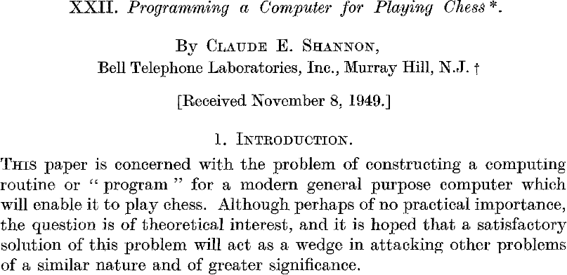
Type-B
The term “Machine Learning” was coined by IBM researcher Arthur Samuel in 1959
Enough work has been done to verify the fact that a computer can be programmed so that it will learn to play a better game of checkers than can be played by the person who wrote the program
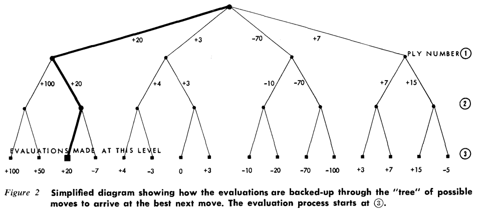
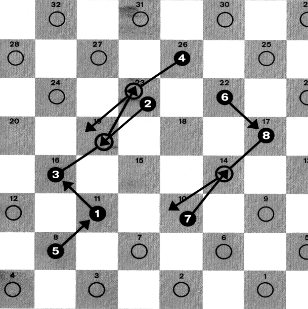
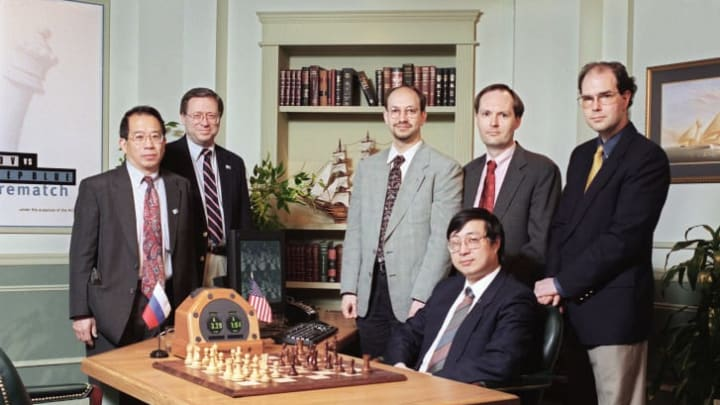
In theory, a sufficiently beefy computer could simulate every possible move (and counter-move) in its memory, rank which moves end up doing best in each simulated game, and then perform the optimal move on each turn. But to actually implement a computer that powerful—and fast enough to compete in a time-limited tournament—was a matter of extreme effort. It took Hsu and Campbell more than a decade to master it.
There are very few problems out there where, as with chess, you have all the information you could possibly need to make the right decision
Murray Campbell, Deep Blue co-inventor
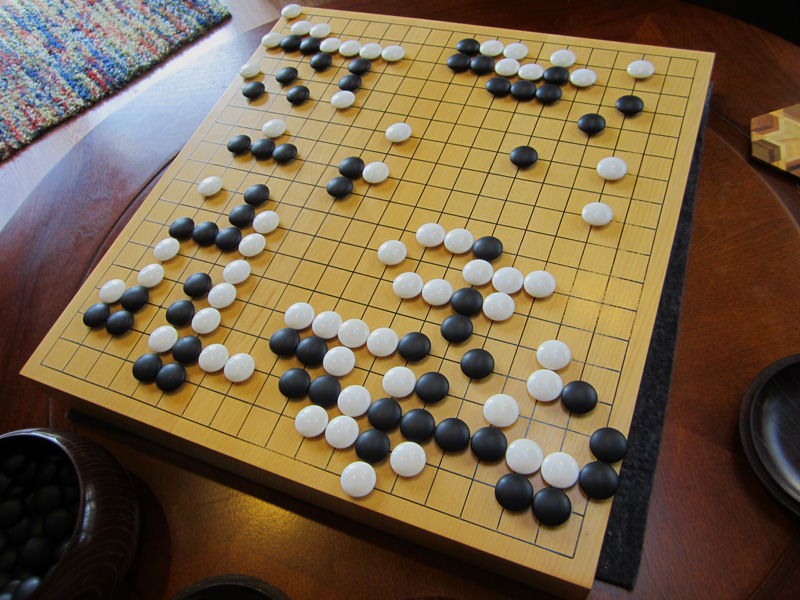
Given this virtually illimitable complexity, Go is, much more than chess, about recognizing patterns that arise when clutches of stones surround empty spaces.
AlphaGo combines neural network algorithms and machine-learning techniques. For any particular board position, two neural networks operate in tandem to optimize performance.
A “value network” reduces the effective depth \(d\) by estimating how likely a given board position will lead to a win (without chasing down every node of the search tree)
A “policy network” reduces the breadth \(b\) of the game by learning the best moves for that position. The policy network generates possible moves that the value network then judges on their likelihood to vanquish the opponent.
A statistical technique for a deterministic game
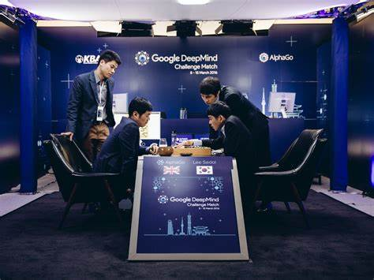
Developed by Demis Hassabis at DeepMind Technologies, acquired in 2014 by Google.
Expert systems are computer programs aiming to model human expertise in one or more specific knowledge areas (60s-70s).
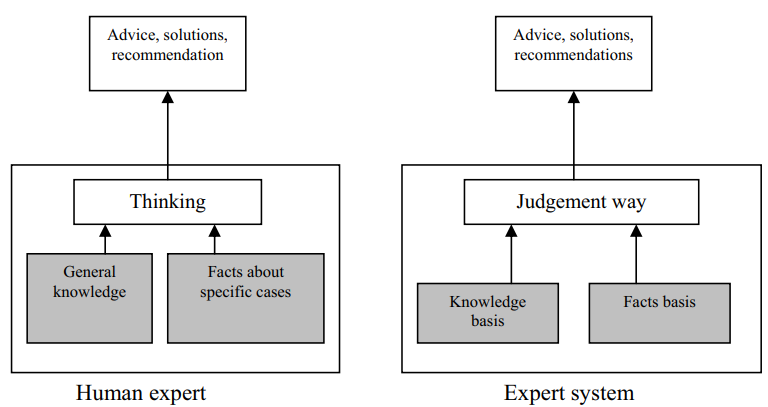
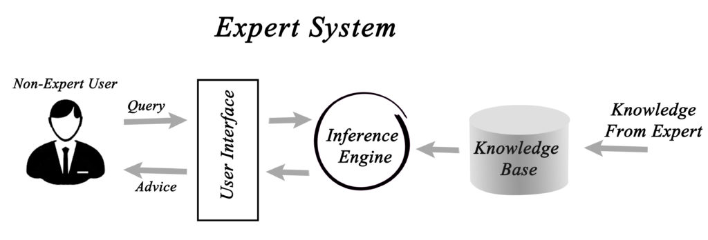
Forward chaining (What can happen next ?)
Backward chaining (Why did this happen?)
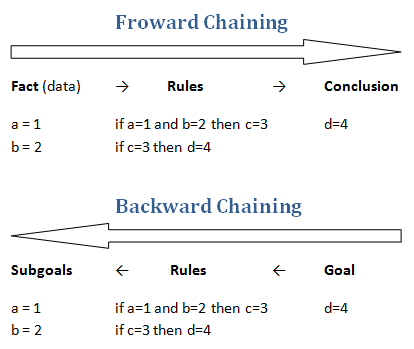
John McCarthy invented the LISP (list processing) programming language, based on the mathematical concept of recursive functions. It is the second oldest* high level programming language still in use and has evolved in many “dialects”. LISP has dominated the scene of AI development for decades:
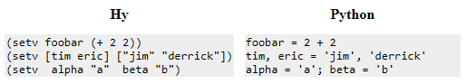
*After FORTRAN (1957) and before COBOL (1959), BASIC (1964), C (1972), SQL (1974)
Prolog (1972) is a logic programming language, in which the program statements express the facts and rules about different problems within a system of formal logic. Prolog intended primarily as a declarative programming language. It was developed in France by Alain Colmerauer. It is an ideal candidate to implement expert systems as:
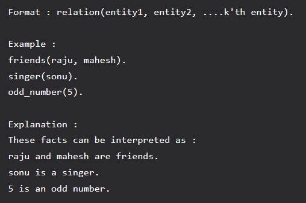
Heuristic DENDRAL is a computer program written to solve problems of inductive inference in organic chemistry
The notion starts to emerge that the value is in the knowledge more than the inference scheme
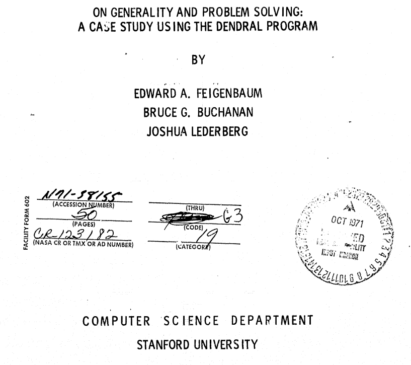
Operational and organisational issues hinder further development of ES
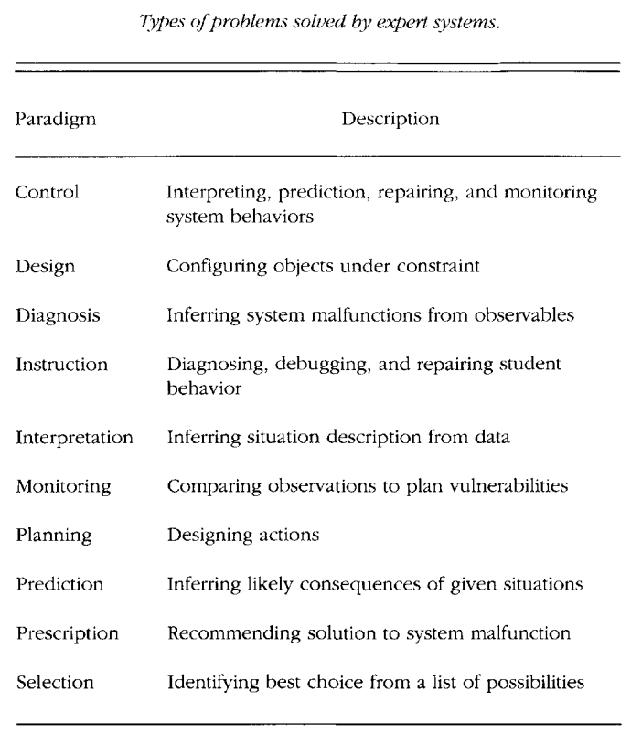
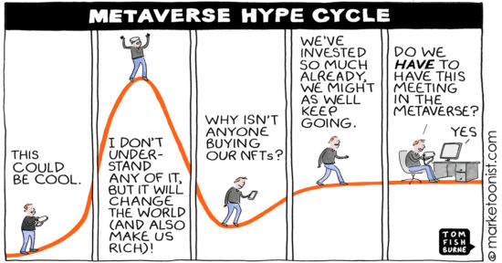
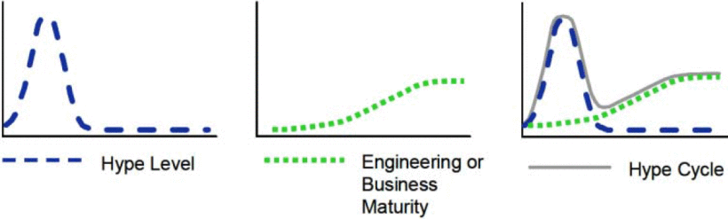
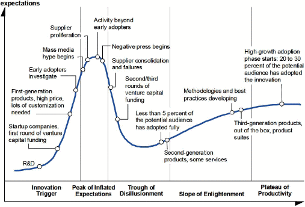
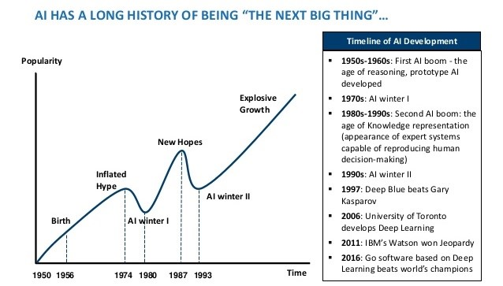
1966: the ALPAC report
One of the major drivers of AI funding in the US was the development of a real-time translation machine amid the Cold War atmosphere. After preliminary positive results in Machine Translation in the 50’s, US agencies started to fund the field. The ALPAC report in 1966 highlighted the substantial failure to achieve the aim, the US funding collapsed to zero, the AI field lost the support of the public opinion.
1973: the Lighthill report
A similar report was commissioned by the UK government to prof Lighthill, who concluded his analysis in 1973 affirming that “in no part of the field have discoveries made so far produced the major impact that was then promised”. This interrupted UK public investments in the area of AI.
1972: Reducibility Among Combinatorial Problems
Richard Karp proved 21 difficult problems in computer science to be NP-complete which highlighted the problem of “combinatorial explosion” as a function of the input size. This meant that it was impossible to scale up any of the AI solutions to toy problems into useful real-life applications with the available hardware.
AI is no longer sexy, let’s call them expert systems - 10.1007/978-1-4684-2001-2_9
The lagging of expert systems ES had to face the disillusion after the hype.
Many issues were highlighted:
Gill survey (1995) on all ES developed in the 80s and early 90s
Let’s play chess! - DOI: 10.2307/249711
The availability of data and the leap in computing power of the last years create challenges and incredible opportunities.
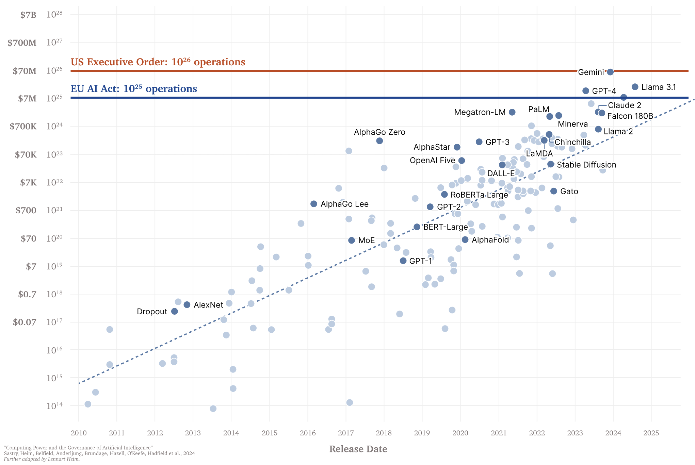
Training compute has been increasing at a fast rate, doubling roughly every 6 months (4×per year). The US AI EO introduces reporting requirements for models trained with more than \(10^{26}\) operations. The EU AI Act presumes a GPAI model poses systemic risk and imposes a variety of requirements for models trained with more than \(10^{25}\) operations. DOI 10.48550/arXiv.2405.10799
ENG4200 AI4